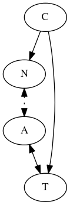
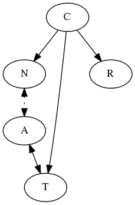

The Network Topology¶
This is an abstracted map of the network:

| Label | Value |
|---|---|
| C | the Control PC (where the ape is run and the configuration file is located) |
| N | a Node (e.g. a tablet or PC configured in the NODES section) |
| T | the Traffic PC (used to generate traffic configured in the TRAFFIC_PC section) |
| A | The Wireless Access Point |
| – | Cabled Ethernet connection |
| . . | Wireless Ethernet connection |
Adding Rotation¶
To add rotations the topology is extended:

| Label | Value |
|---|---|
| C | the Control PC (where the ape is run and the config-file is located) |
| N | a Node (e.g. a tablet or PC configured in the NODES section) |
| T | the Traffic PC (used to generate traffic configured in the TRAFFIC_PC section) |
| R | The Rotation Control (PC attached to the turntable configured in the ROTATE section) |
| A | Wireless Access Point |
| – | Cabled Ethernet connection |
| . . | Wireless Ethernet connection |
Adding Power-Switching¶
To add power-switching the topology is extended:
![digraph RotationTopology {
C -> N
C -> T
C -> R
C -> P
N -> A [style="dotted", dir="both"]
A -> T [dir="both"]
}](../../_images/graphviz-60105879895573ba96699921f9f1054aad3cd7ff.png)
| Label | Value |
|---|---|
| C | the Control PC (where the ape is run and the config-file is located) |
| N | a Node (e.g. a tablet or PC configured in the NODES section) |
| T | the Traffic PC (used to generate traffic configured in the TRAFFIC_PC section) |
| R | The Rotation Control (PC attached to the turntable configured in the ROTATE section) |
| P | set of Power Switches (configured in the POWERON) |
| A | Wireless Access point |
| – | Cabled Ethernet connection |
| . . | Wireless Ethernet connection |